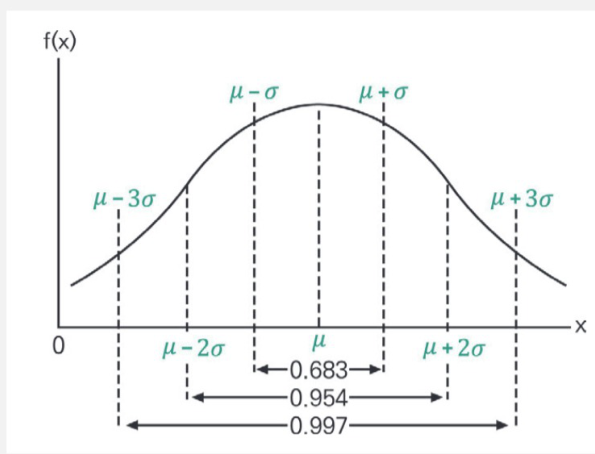
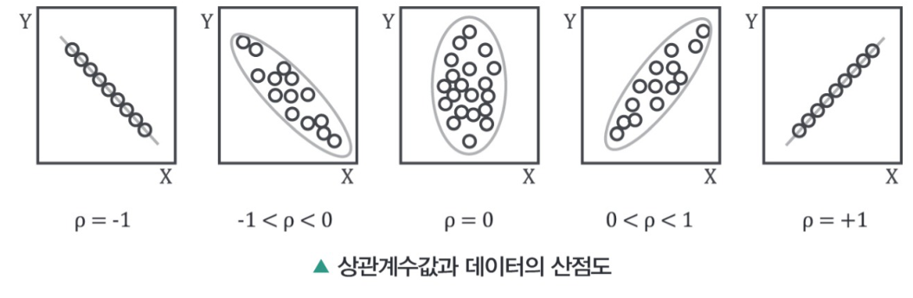
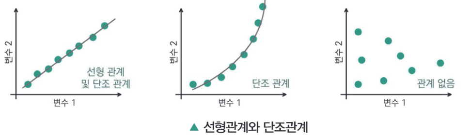
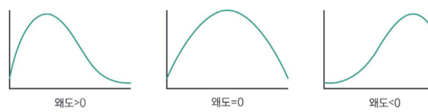
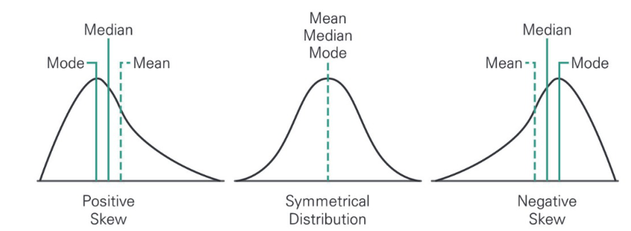
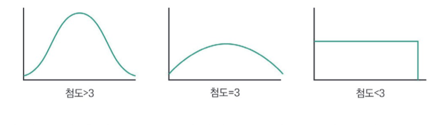
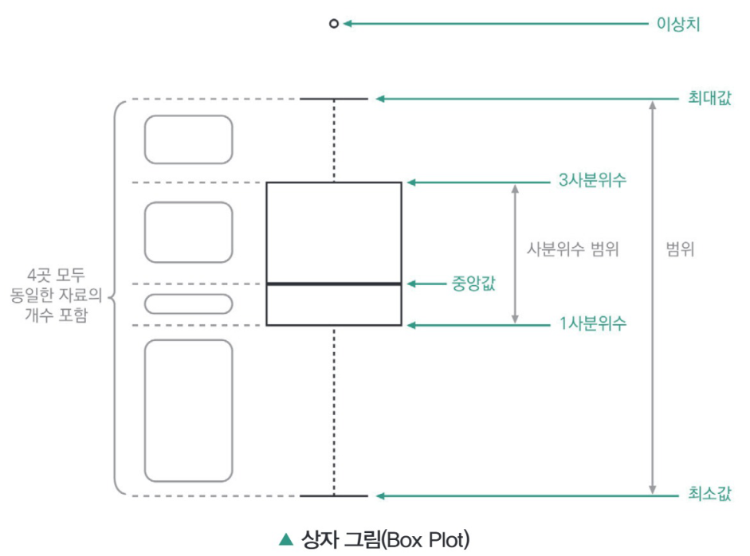
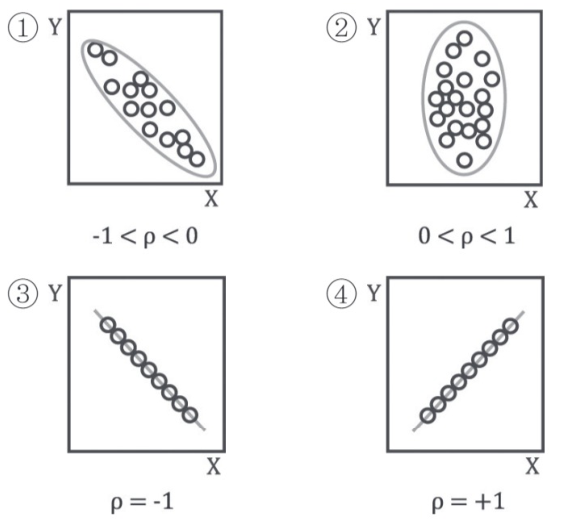

PART 02 · CHAPTER 02 데이터 탐색
원본: 04_빅분기필기-데이터전처리.pdf (책 1-202 ~ 1-239)
작업 진행 중 — 좌측 퀵메뉴는 본문 제목을 따라 자동 생성됩니다.
SECTION 01 데이터 탐색의 기초
빈출 태그 데이터 분석 · 상관분석 · 기초통계 · 분산 · 편차
01 데이터 탐색의 개요
1) 탐색적 데이터 분석(Exploratory Data Analysis, EDA)
수집한 데이터가 들어왔을 때, 다양한 방법을 통해서 자료를 관찰하고 이해하는 과정을 의미하는 것으로 본격적인 데이터 분석 전에 자료를 직관적인 방법으로 통찰하는 과정이다.
2) 탐색적 데이터 분석의 필요성
- 데이터의 분포 및 값을 검토함으로써 데이터가 표현하는 현상을 이해하며 내재된 잠재적 문제에 대해 인식하고 해결안을 도출할 수 있다.
- 문제점 발견 시 본 분석 전 데이터의 수집 의사를 결정할 수 있다.
- 다양한 각도에서 데이터를 살펴보는 과정을 통해 문제정의 단계에서 인지 못한 새로운 양상 · 패턴을 발견할 수 있다.
- 새로운 양상을 발견 시 초기설정 문제의 가설을 수정하거나 또는 새로운 가설을 설립할 수 있다.
3) 분석과정 및 절차
- 분석의 목적과 변수가 무엇인지, 개별변수의 이름이나 설명을 가지는지 확인한다.
- 데이터의 문제성을 확인한다. 즉, 데이터의 결측치의 유무, 이상치의 유무 등을 확인하고 추가적으로 분포상의 이상 형태와 Head 또는 Tail 부분을 확인한다.
- 데이터의 개별 속성값이 예상한 범위 분포를 가지는지 확인한다(기초통계산출을 통한 확인과정을 거친다).
- 관계속성 확인 절차를 가진다. 즉, 개별 데이터 간의 속성 관찰에서 보지 못한 데이터 간의 속성(예 상관관계 등)을 확인한다.
4) 이상치의 검출
이상치가 왜 발생했는지 의미를 파악하는 것이 중요하다. 그리고 그러한 의미를 파악했으면 어떻게 대처해야 할지(제거, 대체, 유지 등)를 판단한다.
이상치를 발견하는 기법으로 다음과 같은 방법들이 있다.
① 개별 데이터 관찰
- 데이터 값을 눈으로 살펴보면서 전체적인 추세와 특이사항을 관찰할 수 있다.
- 데이터가 많다고 앞부분만 보면 안 되고, 패턴이 뒤에서 나타날 수도 있으므로 뒤 or 무작위로 표본을 추출해서 관찰한다. 단, 이상치는 표본의 크기가 작은 경우 나타나지 않을 수도 있다.
② 통계값 활용
- 적절한 요약 통계지표(Summary Statistics)를 사용할 수 있다.
- 데이터의 중심을 알기 위해서는 평균(mean), 중앙값(median), 최빈값(mode)을 사용할 수 있다.
- 데이터의 분산도를 알기 위해서는 범위(range), 분산(variance)을 사용할 수 있다.
- 통계 지표를 이용할 때는 데이터의 특성에 주의해야 한다. 예를 들어, 평균에는 집합 내 모든 데이터 값이 반영되기 때문에, 이상값이 있으면 값이 영향을 받지만, 중앙값에는 가운데 위치한 값 하나가 사용되기 때문에 이상값의 존재에도 대표성이 있는 결과를 얻을 수 있다.
1. IQR(Inter Quartile Range) 방법(사분위범위를 이용한 이상치 제거 방법)
전체 데이터들을 오름차순으로 정렬하고, 정확히 4등분(25%, 50%, 75%, 100%)으로 나눈다.
여기서 75% 지점의 값(75% percentile: 3 사분위수)과 25% 지점(25% percentile: 1 사분위수)의 값의 차이를 IQR이라고 정의한다.
최소값 = 25% percentile: 1 사분위수 − 1.5 × IQR
결정된 최대값보다 크거나 최소값보다 작은 값을 이상치로 간주한다. 터키펜스(Turkey Fences)라고도 한다.
2. 정규분포를 활용(평균과 분산을 이용한 이상치 제거 방법)

정규분포를 이용하여 어느 정도의 값이 이상치인지 직접 판단하여 이상치를 제거할 수도 있다. 예를 들어 (μ−2σ) ~ (μ+2σ) 또는 (μ−1.5σ) ~ (μ+1.5σ) 구간을 벗어나는 값을 이상치로 판단한다.
** 여기서 σ: 표준편차, μ: 평균을 말한다.
| 단위 | 분포내의 면적(μ 중심으로) | 비고 |
| 1σ (μ−σ) ~ (μ+σ) | 68.3% | 불량률 32% |
| 2σ (μ−2σ) ~ (μ+2σ) | 95.4% | 불량률 5% |
| 3σ (μ−3σ) ~ (μ+3σ) | 99.7% | 불량률 0.3% |
| 4σ (μ−4σ) ~ μ+4σ | 99.99% | 불량률 0.01% |
| 5σ (μ−5σ) ~ (μ+5σ) | 99.9999% | 불량률 0.0001% |
| 6σ (μ−6σ) ~ (μ+6σ) | 99.99999999% | 불량률 0.00000001% |
③ 시각화 활용
시각적인 표현은, 분석에 많은 도움을 준다. 시각화를 통해 주어진 데이터의 개별 속성에 어떤 통계 지표가 적절한지 결정할 수 있다.
- 시각화 방법에는 확률밀도 함수, 히스토그램, 점플롯(dot plot), 워드 클라우드, 시계열 차트, 지도 등이 있다.
④ 머신러닝 기법 활용
- 대표적인 머신러닝 기법으로 K-means를 통해 이상치를 확인할 수 있다.
- 정상 데이터의 패턴을 학습하여 이상치를 검출하는 방법이 주로 사용된다.
02 상관관계분석
1) 변수 간의 상관성 분석
두 변수 간에 어떤 선형적 관계를 갖고 있는지를 분석하는 방법이다. 두 변수는 서로 독립적인 관계이거나 상관된 관계일 수 있으며 이때 두 변수 간의 관계의 강도를 상관관계(correlation)라 한다.
- 단순상관분석(Simple Correlation Analysis) : 단순히 두 개의 변수가 어느 정도 강한 관계에 있는가를 측정한다.
- 다중상관분석(Multiple Correlation Analysis) : 3개 이상의 변수 간의 관계강도를 측정한다.
- 편상관관계분석(Partial Correlation Analysis) : 다중상관분석에서 다른 변수와의 관계를 고정하고 두 변수의 관계강도를 측정하는 것을 말한다.
2) 상관분석의 기본가정
- 선형성 : 두 변인 X와 Y의 관계가 직선적인지를 알아보는 것으로 이 가정은 분포를 나타내는 산점도를 통하여 확인할 수 있다.
- 동변량성(등분산성, Homoscedasticity) : X의 값에 관계없이 Y의 흩어진 정도가 같은 것을 의미한다. 반의어는 이분산성(Heteroscedasticity)이다.
- 산포도가 특정 구간에 상관없이 퍼진 정도가 일정할 때 자료가 동변량성을 띤다고 얘기하며, 반대로 그 정도가 일정하지 않으면 이분산성을 보인다고 말한다.
- 두 변인의 정규분포성 : 두 변인의 측정치 분포가 모집단에서 모두 정규분포를 이루는 것이다.
- 무선독립표본 : 모집단에서 표본을 뽑을 때 표본대상이 확률적으로 선정된다는 것이다.
3) 상관분석 방법
① 피어슨 상관계수(Pearson Correlation Coefficient 또는 Pearson’s r)
- 두 변수 X 와 Y 간의 선형 상관관계를 계량화한 수치이다.
- 피어슨 상관계수는 +1과 −1 사이의 값을 가지며, +1은 완벽한 양의 선형 상관관계, 0은 선형 상관관계 없음, −1은 완벽한 음의 선형 상관관계를 의미한다.
C(x, y) = Cov(x, y) = 1/(n−1) ∑ni=1 (xi−x̄)(yi−ȳ) : 표본 간의 공분산
σx: 표본 x의 표준편차, σy: 표본 y의 표준편차, x̄, ȳ: 각각의 평균

② 스피어만 상관계수(Spearman Correlation Coefficient)
- 데이터가 서열자료인 경우, 즉 자료의 값 대신 순위(rank)를 이용하는 경우의 상관계수로서, 데이터를 작은 것부터 차례로 순위를 매겨 서열 순서로 바꾼 뒤 순위를 이용해 상관계수를 구한다.
- 두 변수 간의 연관 관계가 있는지 없는지를 밝혀 주며 자료에 이상점이 있거나 표본크기가 작을 때 유용하다.
- di2 : xi의 순위(xi의 관측치를 크기 순으로 정렬하였을 때 순위)와 yi의 순위 차이를 나타낸다. n은 표본의 개수이다.
- 즉, 스피어만 상관계수(ρ)는 값의 크기보다 순위가 얼마나 일치하는지를 측정한다. 순위 차이가 작을수록(거의 일치할수록) ρ는 1에 가까워지고, 순위 차이가 클수록 ρ는 작아지며, 순위 차이가 충분히 크면 0을 지나 음수가 될 수도 있다. 따라서 ρ는 두 변수 간의 단조 관계를 파악하는데 쓰인다.
ρ ≈ 0 : 순위 기준 단조 관계가 약함/없음
ρ ≈ −1 : 단조 감소 관계(한쪽이 커질수록 다른 쪽은 줄어듦)

- 선형관계의 경우는 직선의 형태로 모형화가 가능한 것으로 해석될 수 있다. 단조관계는 두 변수가 동일한 방향으로 변화는 하지만 직선의 형태로 모형화가 가능하지 않은(일정한 비율로 변화되는 것이 아닌) 것을 의미한다.
03 기초통계량의 추출 및 이해
자료를 수집하여 요약 · 정리하는 기초통계(또는 기술통계)는 자료의 특성을 정량적인 수치에 의해서 나타내는 방법이다.
자료의 특성을 중심화 경향(Central Tendency), 퍼짐 정도(산포도 · 분산도), 자료의 분포형태(Shape of Distribution) 등의 수치적 결과로 나타낼 수 있다.
1) 중심화 경향 기초통계량
① 산술평균(Arithmetic Mean)
- 모든 자료들을 합한 후 전체 자료수로 나누어 계산하는 일반적인 평균을 의미한다.
- 모평균 μ(Population Mean) : 모집단 전체 자료의 산술평균
- 표본평균 X̄(Sample Mean) : 모집단의 부분집합인 추출된 표본 전체의 산술평균
② 기하평균(Geometric Mean)
- n개의 자료에 대해서 관측치를 곱한 후 n 제곱근으로 표현한다.
- 다기간의 수익률에 대한 평균 수익률, 평균물가상승률 등을 구할 때 사용한다.
그러나 10,000 × 0.1 = 1000원이므로 11000원이 되고 이후 11,000 × 10% = 1,100원이므로 9,900원이 된다.
기하평균식으로 보면 다음 아래와 같다(수익률변환기준).
최초 10,000원 − 50원 − 50원 ≈ 9,900원
③ 조화평균(Harmonic Mean)
- 각 요소의 역수의 산술평균을 구한 후 다시 역수를 취하는 형태로 표현한다.
- 변화율 등의 평균을 구할 때 사용한다.
- 각 자료가 동일한 경우 자료에 대한 조화평균, 산술평균값과 기하평균의 값은 같다. 다만 자료가 서로 다를 경우 조화평균≤기하평균≤산술평균의 부등식 관계를 가진다.
④ 중앙값(Median)
- 중앙값은 자료를 크기 순으로 나열할 때 가운데에 위치한 값이다.
- 자료의 수를 n이라 할 때, n이 홀수이면 (n+1)/2번째 자료값이 중앙값이 되고, n이 짝수이면, n/2번째와 n/2+1번째 자료의 평균을 중앙값으로 정의한다.
⑤ 최빈값(Mode)
- 가장 노출 빈도가 높은 자료를 최빈값이라 한다. 최빈값은 질적자료나 양적자료 모두에 사용된다.
⑥ 분위수(Quantile)
- 분위수는 자료의 위치를 표현하는 수치이다. 자료를 크기순서대로 배열을 한 후 그 자료를 분할하는 역할을 하는 위치의 수치를 계산한 것이다.
- 자료를 몇 등분 하느냐에 따라 사분위수(quartile), 오분위수(quintile), 십분위수(decile), 백분위수(percentile) 등이 있다.
- N개의 자료가 존재할 때 백분위수로 전환되는 분위수의 위치를 나타내는 식은 아래와 같다. 전체 y(%)가 해당 분위수의 하부에 위치한다.
2) 산포도(분산도, Degree Dispersion)
자료의 퍼짐 정도를 나타내는 기초 통계량이다. 중심 위치의 측도만으로 자료의 분포에 대한 충분한 정보를 얻을 수 없으므로 중심 경향도 수치에서 자료가 얼마나 떨어져 있는지를 측정하는 척도도 필요하다.
① 분산(Variance), 표준편차(Standard Deviation)
- 분산은 평균을 중심으로 밀집되거나 퍼짐 정도를 나타내는 척도이고, 표준편차는 분산의 제곱근으로 표현한다.
- 분산은 개개의 자료값과 평균과의 편차의 제곱을 이용하여 표현되므로 자료값의 단위를 제곱한 단위를 사용하게 된다. 분산으로 얻은 수치를 해석하기가 곤란하다는 단점을 보완하기 위하여 제곱근을 취한 척도가 표준편차이다.
σ = √[ (1/N) ∑Ni=1 (xi−μ)2 ] (모표준편차), s = √[ 1/(n−1) ∑ni=1 (xi−x̄)2 ] (표본표준편차)
- 분산의 특성
- 개개의 자료값에 대한 정보를 반영한다.
- 수리적으로 다루기 쉽다.
- 특이점에 매우 큰 영향을 받는다.
- 분산이 클수록 각 자료값이 평균으로부터 넓게 흩어진 형태를 갖는다.
- 미지의 모분산을 추론할 때 많이 사용한다.
12%, 20%, 23%, 25%, 30%
② 범위(Range)
- 데이터 간의 최댓값과 최솟값의 차이를 나타내는 것으로 동일한 범위를 갖더라도 자료의 분포모양은 다를 수가 있음에 유의해야 한다.
③ 평균 절대 편차(평균 편차, 절대 편차, Mean Absolute Deviation, MAD)
- 각 자료값과 표본평균과의 편차의 절댓값에 대한 산술평균을 의미한다.
- 개개의 자료값에 대한 정보를 반영한다.
- 이상치에 대한 영향을 범위보다 적게 받는다.
- 절댓값을 사용하므로 수리적으로 다루기 부적절하다(평균이 대푯값인 표준 편차나 분산이 더 선호되는 이유이다).
- 편차는 유클리디안 거리 개념이며 특정 대푯값으로 떨어진 거리를 의미한다.
- 절대 편차의 최소값을 갖는 자료값(기초통계량)은 평균이 아닌 중앙값이다.
- 절대 편차는 미분 불가능점이 존재한다.
- 평균 절대 편차가 클수록 자료는 폭넓게 분포한다.
- 평균 절대 편차보다는 중앙값 절대 편차(Median Absolute Deviation)를 사용할 때, 유용할 수 있다.
12%, 20%, 23%, 25%, 30%
④ 사분위범위(Inter Quartile Range)
- 자료를 크기 순으로 배열 후 자료의 1/4에 해당하는 1사분위수(Q1)를 구하고 3/4에 해당하는 3사분위수(Q3)를 구한다. 사분위범위는 Q3−Q1으로 정의되며 자료의 50% 범위 내에 위치하게 됨을 의미한다.
Q3 = (11+1)(75/100) = 9이므로 9번째 수치인 19이다.
- 사분위범위는 주로 이상치의 판단 시에 사용되는 것으로
최소값 = 25% percentile: 1 사분위수 − 1.5 × IQR
결정된 최대값보다 크거나 최소값보다 작은 값을 이상치로 간주한다.
최소값 = 25% percentile: 1 사분위수 − 1.5 × IQR = 12 − 1.5 × 7 = 1.5
⑤ 변동계수(Coefficient of Variance, CV)
- 평균을 중심으로 한 상대적인 산포의 척도를 나타내는 수치이다.
- 측정 단위가 동일하지만 평균이 큰 차이를 보이는 두 자료집단 또는 측정단위가 서로 다른 두 자료집단에 대한 산포의 척도를 비교할 때 많이 사용한다.
- 변동계수가 클수록 상대적으로 넓게 분포를 이룬다.
예 신생아의 몸무게와 산모의 몸무게(단위는 같으나, 평균의 차가 큰 경우)
포트폴리오B의 CV = 3% / 15% = 20%
3) 자료의 분포형태(Shape of Distribution)
① 왜도(Skewness)
- 왜도는 분포의 비대칭(asymmetry) 정도를 나타내는 통계적 측도이다. 데이터 분포의 대칭성과 비대칭성을 정량화하여 평가하는 데 사용된다.
- 분포가 대칭이면 왜도는 0이다. 왼쪽으로 치우친 경우 왜도는 양수, 오른쪽으로 치우친 경우 왜도는 음수이다.

0(오른쪽 꼬리가 긴 분포), 왜도=0(좌우대칭 분포), 왜도<0(왼쪽 꼬리가 긴 분포)">- 왜도는 분포의 모양 뿐만 아니라 이상치의 존재 여부를 파악하는 데에도 도움을 줄 수 있다. 이상치는 분포의 비대칭성을 높이고, 왜도의 크기를 변화시킨다.
- 왜도는 다음과 같은 공식으로 계산된다.
n은 데이터의 총 개수, xi는 개별 데이터 값, x̄는 데이터의 평균
- 왜도의 값은 일반적으로 −3과 +3 사이의 범위에 있으며, 보통 왜도의 절대값이 1.96보다 크면 비대칭성이 있다고 판단할 수 있다. 하지만 이것은 규칙적 기준은 아니며, 데이터 분포의 특성과 분석 목적에 따라 다르다.

| 왜도(Skewness) | 모양 | 성질 |
| 양수(Positive) | 오른쪽으로 긴꼬리 | 평균 > 중앙값 > 최빈값 |
| 0 | 좌우 대칭 | 평균 = 중앙값 = 최빈값 |
| 음수(Negative) | 왼쪽으로 긴꼬리 | 평균 < 중앙값 < 최빈값 |
피어슨의 비대칭 계수는 칼 피어슨이 비대칭도 측정을 위해 제안한 간단한 계산법으로, 일반적으로 왜도와 비슷하게 분포가 좌우로 얼마나 대칭적인지를 나타내는 통계값이다(분포의 모양과 성질은 표의 구분과 동일).
피어슨의 비대칭 계수는 다음과 같이 정의된다.
3*(평균 − 최빈값) / 표준편차
3*(평균 − 중앙값) / 표준편차
일반적으로 계수 값 = 3*(평균 − 중앙값)/표준편차로 구할 수 있다.
- 중앙값, 최빈값, 평균이 일치하면 Cs=0으로 정규분포를 이룬다.
- 계수 값이 0보다 크면 왼쪽으로 치우치고 오른쪽으로 긴 꼬리를 가지는 분포를 이룬다. 이를 정적편포라 한다.
- 계수 값이이 0보다 작으면 오른쪽으로 치우치고 왼쪽으로 긴 꼬리를 가지는 분포를 이룬다. 이를 부적편포라 한다.
② 첨도(Kurtosis)
- 분포의 뾰족한(peakedness) 정도를 나타내는 통계적 척도이다.

3(뾰족한 분포), 첨도=3(정규분포에 해당하는 완만한 분포), 첨도<3(평평한 분포)">- 첨도의 값이 3 미만인 경우는 평평한 분포이고 3이면 정규분포를 나타내며 3이 넘는 경우는 뾰족한 분포의 형태를 가지는 것으로 판단할 수 있다.
1차 모멘트 → 평균
2차 모멘트 → 분산
3차 모멘트 → 왜도
4차 모멘트 → 첨도
04 모멘트(적률)
모멘트는 확률분포의 형태를 수치적으로 표현하기 위한 대표적인 통계량이다. 데이터가 특정 값 주변에 어떻게 분포하고 있는지, 얼마나 퍼져 있는지, 그리고 분포가 어느 방향으로 치우쳐 있는지를 설명하는 데 사용된다.
1) 모멘트(Moment)의 정의
① 원점 모멘트(Raw Moment)
기준점을 0으로 두고 계산한 모멘트이다. 확률변수 X의 k차 원점 모멘트는 다음과 같이 정의된다.
원점 모멘트는 통계학적 이론 전개 시 의미가 있지만 실제 분석에서는 많이 사용되지 않는다.
② 중심 모멘트(Central Moment)
데이터의 평균 μ을 기준으로 계산한 모멘트로, 실제 통계 분석에서 가장 널리 사용된다. 확률변수 X의 k차 중심 모멘트는 다음과 같이 정의된다.
2) 주요 모멘트와 기술통계량의 의미
모멘트를 통해 데이터 분포의 형태를 단계적으로 이해할 수 있다.
① 1차 원점 모멘트 − 평균(Mean)
분포의 중심 위치를 나타내는 가장 기본적인 통계량이다.
② 2차 중심 모멘트 − 분산(Variance)
데이터가 평균으로부터 얼마나 퍼져 있는지를 나타낸다. 값이 클수록 데이터의 변동성이 크다.
③ 3차 중심 모멘트 − 왜도(Skewness)
분포의 비대칭성을 나타낸다.
- 왜도가 양수 : 오른쪽 꼬리가 길다. (Positive Skew)
- 왜도가 음수 : 왼쪽 꼬리가 길다. (Negative Skew)
④ 4차 중심 모멘트 − 첨도(Kurtosis)
분포의 뾰족함과 꼬리의 두꺼움을 나타낸다.
- 첨도가 높은 경우 : 분포가 뾰족하고 이상치가 많다.
- 첨도가 낮은 경우 : 분포가 평평하다.
3) 모멘트의 주요 활용
모멘트는 단순한 이론적 개념을 넘어, 실제 데이터 분석과 통계 모델링에서 매우 중요한 역할을 한다. 특히 데이터의 분포 특성을 정량적으로 파악하고, 모델의 가정이 적절한지를 검증하며, 이상치 탐지 및 데이터 전처리 과정에서도 핵심적으로 활용된다.
① 정규성 검정 및 전처리 연계
모멘트는 데이터가 정규분포를 따르는 지 판단하는 직관적 기준이 된다.
- 정규분포의 통계적 특징 : 왜도 ≈ 0, 첨도 ≈ 3(단, 초과첨도 기준으로는 0)
- 왜도와 첨도가 위 조건을 벗어나 분포가 비대칭인 경우, 로그 변환이나 Box-Cox 변환 같은 전처리 기법을 적용하기도 한다. 이 과정에서 모멘트 값 변화를 통해 전처리 효과를 정량적으로 평가할 수 있다.
② 이상치 탐지
첨도는 극단적 이상치 존재 가능성을 판단하는 중요한 지표이다.
- 첨도가 높은 경우 : 중심이 뾰족하고 꼬리가 두꺼움 → 극단적 이상치 많음
- 첨도가 낮은 경우 : 중심이 완만하고 꼬리가 얇음 → 이상치가 적고 고르게 분포
또한 왜도와 함께 해석하면 이상치의 방향성까지 파악할 수 있다.
- 왜도 > 0 + 높은 첨도 : 큰 양수 방향 이상치 존재
- 왜도 < 0 + 높은 첨도 : 큰 음수 방향 이상치 존재
③ 통계 모델링에서의 활용(가설검정 및 추정)
- 회귀분석 가정 검정 : 선형 회귀 모델 구축 후, 잔차(Residuals)의 왜도와 첨도를 확인하여 정규성 가정을 검토하거나, 분산(2차 모멘트)의 변동을 통해 이분산성(Heteroscedasticity) 여부를 판단한다.
- 확률분포 추정 : 표본 데이터에서 계산된 표본 모멘트를 이용하여 모집단의 모수를 추정하는 적률법(Method of Moments)을 사용한다.
④ 머신러닝 스케일링 전략
입력 특징(Feature)들의 모멘트를 분석하여 왜도가 심한 변수를 선별하고, 이에 맞는 로그 변환이나 표준화 및 정규화 스케일링 필요 여부 결정에 활용한다.
모멘트는 수익률 및 자산 리스크 분석에서 특히 중요한 역할을 한다.
- 평균 : 자산의 기대 수익률
- 분산 : 자산의 위험(변동성)
- 왜도 : 수익률의 비대칭성(주가 폭락 위험 등)
- 첨도 : 금융위기 시 극단적 손실 가능성(Tail Risk, 꼬리 위험)
책 1-254 · 1-255 두 쪽이 원본 PDF에 포함되어 있지 않아 해당 구간(자료의 분포형태 후반 ~ 상자 수염 그림 직전)을 전사하지 못했습니다. 원본 PDF에서 스프레드 1장(책 2쪽) 분량이 통째로 빠져 있습니다.
⑦ 상자 수염 그림(Box Plot)
수치적 자료를 표현하는 그래프이다. 이 그래프는 가공하지 않은 자료 그대로를 이용하여 그린 것이 아니라, 자료로부터 얻어 낸 통계량인 5가지 요약 수치(다섯 숫자 요약, Five-number Summary)를 가지고 그린다.

- 5가지 요약 수치 : 최솟값, 제 1사분위(Q1), 제2사분위(Q2, 중앙값), 제3사분위(Q3), 최댓값을 일컫는 말이다.
- 작성 방법
| (Step1) | 주어진 데이터에서 각 사분위수를 계산한다. |
| (Step2) | 그래프에서 제1사분위와 제3사분위를 밑변으로 하는 직사각형을 그리고, 제2사분위에 해당하는 위치에 선분을 긋는다. |
| (Step3) | 사분위범위(IQR: Interquartile Range, Q3−Q1)를 계산한다. |
| (Step4) | Q3과 차이가 1.5IQR 이내인 값 중에서 최댓값을 Q3과 직선으로 연결하고, 마찬가지로 Q1과 차이가 1.5IQR 이내인 값 중에서 최솟값을 Q1과 연결한다. |
| (Step5) | Q3보다 1.5IQR 이상 초과하는 값과 Q1보다 1.5IQR 이상 미달하는 값은 점이나, 원, 별표 등으로 따로 표시한다(이상치 점). |
합격을 다지는 예상문제
- 수집한 데이터가 들어왔을 때, 다양한 방법을 통해서 자료를 관찰하고 이해하는 과정을 의미하는 것이다.
- 데이터의 분포 및 값을 검토함으로써 데이터가 표현하는 현상을 이해할 수 있다.
- 문제점 발견 시 본 분석 전 데이터의 수집 의사를 결정할 수 있다.
- 최초의 가설에 집중하여 원하는 패턴과 양상에 맞는지에 집중하여 검증하는 데 노력한다.
(나) 데이터의 문제성을 확인한다. 즉, 데이터의 결측치의 유무, 이상치의 유무 등을 확인하고 추가적으로 분포상의 이상 형태, Head 또는 Tail 부분을 확인한다.
(다) 데이터의 개별 속성 값이 예상한 범위 분포를 가지는지 확인한다.
(라) 관계속성 확인 절차를 가진다. 즉, 개별 데이터 간의 속성 관찰에서 보지 못한 데이터 간의 속성(예: 상관관계 등)을 확인한다.
- 가, 나
- 가, 다
- 가, 나, 라
- 가, 나, 다, 라
- 데이터의 중심을 알기 위해서는 평균(mean), 중앙값(median), 최빈값(mode), 첨도(kurtosis)를 사용할 수 있다.
- 데이터의 분산도를 알기 위해서는 범위(range), 분산(variance) 왜도(skewness)를 사용할 수 있다.
- 평균에는 집합 내 모든 데이터 값이 반영되기 때문에, 이상값의 영향을 받는다.
- 중앙값은 전체변수의 범위 중에서 가운데값을 사용하므로 이상값의 크기에 영향을 받는다.
- 선형성 : 두 변인 X와 Y의 관계가 직선적인지를 알아보는 것으로 이 가정은 분포를 나타내는 산점도를 통하여 확인할 수 있다.
- 동변량성 : X의 값에 관계없이 Y의 흩어진 정도가 다른 정도를 의미한다.
- 두 변인의 정규분포성 : 두 변인의 측정치 분포가 모집단에서 모두 정규분포를 이루는 것이다.
- 무선독립표본 : 모집단에서 표본을 뽑을 때 표본대상이 확률적으로 선정된다는 것이다.
- 두 변수 X와 Y 간의 비선형 상관관계를 계량화한 수치이다.
- 두 변수 간의 연관 관계가 있는지를 밝혀 주며 자료에 이상점이 있거나 표본크기가 작을 때 유용하다.
- 피어슨 상관계수는 +1과 −1 사이의 값을 가지며, +1은 완벽한 양의 선형 상관관계, 0은 선형 상관관계 없음, −1은 완벽한 음의 선형 상관관계를 의미한다.
- 데이터가 서열자료인 경우 즉 자료의 값 대신 순위를 이용하는 경우의 상관계수로서, 데이터를 작은 것부터 차례로 순위를 매겨 서열 순서로 바꾼 뒤 순위를 이용해 상관계수를 구한다.

- 산술평균
- 기하평균
- 최빈값
- 범위
- 평균 105, 분산 7.5, 중앙값 105
- 평균 104.5, 분산 8, 중앙값 104.5
- 평균 105, 분산 8, 중앙값 105
- 평균 106.5, 분산 8.5, 중앙값 106.5
위 식을 만족하는 A 값은? (여기서 xi는 위의 자료를 말함)
- 16
- 6
- 15
- 17
- 산술평균
- 조화평균
- 기술평균
- 기하평균
| 평균 | 표준편차 | |
| 체중 | 52.3kg | 2.54kg |
| 신장 | 152.7 cm | 2.28cm |
- 체중에 대한 개인차가 크다.
- 신장에 대한 개인차가 크다.
- 체중에 대한 개인차와 신장에 대한 개인차는 동일하다.
- 체중과 신장의 개인차는 알 수 없다.
- 기초 통계량 중 자료분포의 형태를 알아보는 기초통계량이다.
- 분포가 어느 한쪽으로 치우친(비대칭: asymmetry) 정도를 나타내는 통계적 척도이다.
- 산출공식에 의해 오른쪽으로 더 길면 음의 값이 되고 왼쪽으로 더 길면 양의 값이 된다. 분포가 좌우대칭이면 0이 된다.
- 왜도 산출공식은 [ (1/n)∑ni=1(xi−x̄)3 ] / [ (1/n)∑ni=1(xi−x̄)2 ]3/2 이다.
- 계수 = 12, 왼쪽으로 긴꼬리(오른쪽으로 치우침)
- 계수 = −12, 왼쪽으로 긴꼬리(오른쪽으로 치우침)
- 계수 = 12, 오른쪽으로 긴꼬리(왼쪽으로 치우침)
- 계수 = −12, 오른쪽으로 긴꼬리(왼쪽으로 치우침)
- 6
- 7
- 8
- 9
- 왜도는 0이다.
- 좌우가 서로 대칭인 형태의 분포의 모습을 가지고 있다.
- 평균 중앙값 최빈값 순으로 크기 나열이 가능하다(평균>중앙값>최빈값).
- 첨도는 3이다.
합격을 다지는 예상문제 정답 & 해설
다양한 각도에서 데이터를 살펴보는 과정을 통해 문제정의 단계에서 인지 못한 새로운 양상 · 패턴을 발견할 수 있다. 그러므로 새로운 양상을 발견 시 초기설정 문제의 가설을 수정하거나 또는 새로운 가설을 설립할 수 있다.
탐색적 데이터분석의 분석과정 및 절차의 4가지 항목이다.
첨도, 왜도는 데이터의 분포모양에 해당된다. 중앙값은 전체변수의 범위에서 가운데가 아니라 관찰된 변수들 중의 가운데값이므로 이상값의 영향을 받지 않는다.
동변량성 : X의 값에 관계없이 Y의 흩어진 정도가 같은 것을 의미한다.
피어슨 상관계수는 두 변수 X와 Y 간의 선형 상관관계를 계량화한 수치이다.
오답 피하기 ②, ④는 스피어만 상관계수에 대한 설명이다.
②그림은 ρ = 0 이다..
산술평균, 기하평균, 최빈값은 중심화 경향 기초통계량이고 범위는 산포도(퍼짐정도)에 대한 기초통계량이다.
산술평균 x의 성질로
자료 −산술평균의 전체의 합은 편차를 의미하며 그 값은 0이 된다.
그러므로 문제의 답은 x을 구하면 되고 그 값은 16이다.
비율의 성격을 가지는 자료에 대한 기술적 통계량(평균)은 기하 평균을 사용한다.
체중에 대한 CV = 2.54/52.3 X 100 = 4.857%
신장에 대한 CV = 2.28/152.7 X 100 = 1.493%이므로
체중에 대한 CV가 더 큼 → 산포도가 넓으므로 개인차가 크다.
오른쪽으로 더 길면 양의 값이 되고 왼쪽으로 더 길면 음의 값이 된다.
오른쪽으로 긴꼬리(왼쪽으로 치우침)를 가지는 분포의 형태로 파악이 가능하다.
Q1=(11+1)×(25/100)=3이므로 3번째 수치인 12이고 Q3=(11+1)(75/100)=9이므로 9번째 수치 19이다. 따라서 사분위범위는 19−12=7이 된다.
정규분포 모양의 특징은 좌우가 대칭인 형태로 왜도의 값이 0이 되며 이 경우 평균=중앙값=최빈값이 된다. 첨도의 경우는 3이 된다.
SECTION 02 고급 데이터 탐색
빈출 태그 시공간 데이터 · 다변량 분석 · 비정형 데이터 · 데이터 마이닝
01 시공간 데이터 탐색
1) 시공간 데이터의 개념
- 기본적으로 공간적 정보(데이터)에 시간의 흐름(이력정보 등)이 결합된 다차원 데이터를 다루는 것을 지칭한다.
- 무선이동 통신기술의 발달로 인해 데이터의 통신 및 처리를 다루는 이동 컴퓨팅 등의 분야에서 관심을 가지는 데이터 분야로 특히 스마트폰의 발전으로 그 중요성이 커지고 있다.
① 시간 데이터
기존 데이터는 어느 한 시점에 대한 스냅샷 정보이다. 그래서 데이터에 유효 시간, 거래 시간, 사용자 정의 시간과 같은 연관된 시간 표현을 정의한다.
- 유효 시간 : 데이터가 발생하거나 소멸된 시간
- 거래 시간 : 관리 시스템을 통해 처리된 시간
- 사용자 정의 시간 : 유효 시간이나 거래 시간이 없는 경우 사용자가 정의
- 스냅샷 데이터 : 시간 개념이 필요하지 않아 거래, 유효시간 미지원
- 거래 시간 데이터, 유효 시간 데이터 : 각각 거래, 유효시간만 지원
- 이원 시간 데이터 : 둘 다 지원
② 공간 데이터
공간 데이터는 기존 데이터베이스보다 복잡하고 다양한 유형의 값을 가지므로 효율적으로 관리, 저장, 이용하는 데 초점을 맞춘다.
- 비공간 타입 : 기본적인 데이터 유형을 가진 속성
- 래스터 공간 타입 : 실세계에 존재하는 객체의 이미지
- 벡터 공간 타입 : 점, 선, 면 등의 요소로 구성
- 기하학적 타입 : 벡터 타입의 요소로부터 거리, 면적, 길이 등과 같은 유클리드 기하학 계산 값으로 표현
- 위상적 타입 : 공간 객체 간의 관계를 표현하며, 방위, 공간 객체 간의 중첩, 포함, 교차, 분리 등과 같은 위치적 관계로 대량의 공간을 필요로 해서 일반적으로 저장되지 않고 보통 공간객체로부터 동적으로 계산
③ 공간 데이터 모델
- 관계형 모델 : 데이터의 표현이 유연하지 못하며 실세계 공간의 객체의 특징을 적절히 표현하지 못하는 문제점이 있다.
- 객체지향 모델
- 비 구조적이고 복잡한 데이터를 자연스럽게 표현한다.
- 데이터 계층 구조를 이용한 연산이 쉽다.
- 새로운 함수의 확장이 쉽다.
- 데이터 무결성 검사가 쉽다.
- 설계 단계 모델−구현 단계 모델 사이의 불일치 문제를 줄인다.
④ 시공간 데이터
시간과 공간 데이터의 결합 형태를 지칭한다.
- 실제 객체들은 공간적 정보뿐만 아니라 시간적 정보와도 연관이 있다. 기본적으로 위치 · 영역과 같은 공간 정보는 시간의 흐름에 따라서 변화를 하기 때문이다.
2) 시공간 데이터 분석
① 시공간 데이터에 대한 질의어
- 시공간자료 정의언어 : 시공간 테이블 인덱스 및 뷰(view)의 정의문, 변경문 등이 포함되어 있다. 이 자료는 공간적 속성과 시간적 속성을 동시에 포함한다.
- 시공간자료 조작언어 : 객체의 삽입, 삭제, 변경 등의 검색문이 있다. 이 문장들은 시간지원 연산자와 공간 연산자를 포함하며 이를 통해 객체에 대한 공간 관리와 이력정보를 제공한다.
② 시공간 데이터의 연산
- 시공간위상 관계연산 : 공간위상 연산자는 두 객체 간 공간영역상의 관계에 대해서 참 · 거짓을 반환하는 연산으로 대표적으로 교차(intersection) 연산자는 선과 선의 교차, 선과 면의 교차 여부를 반환한다. 시간관계의 경우는 두 객체의 유효시간 정보를 기반으로 선후관계를 평가하여 참 · 거짓을 반환하는 연산자이다.
- 시공간기하 연산 : 공간기하 연산자와 시간구성 연산자의 결합이다. 공간기하 연산자는 두 객체 간의 거리(distance) 연산을 지칭하며 시간 구성 연산자는 주어진 객체의 유효시간값에 대하여 지정된 시간 혹은 다른 객체의 유효시간값과의 계산을 통해 객체의 유효시간값을 변경하는 연산이다.
3) 적용 및 응용분야
- 시공간 데이터 기술은 지리정보 시스템, 위치기반 서비스, 차량 위치추적 서비스 등에 활용된다.
02 다변량 데이터 탐색
다변량 데이터 탐색은 기본적으로 변수들 간 인과관계의 규명과 분석을 하는 것이다. 변수들 간의 상관관계를 이용하여 변수를 축약하거나 개체들을 분류하고 관련된 분석방법 등을 동원하여 데이터 분석을 하는 것이다.
1) 종속변수와 독립변수 사이의 인과 관계
① 다중회귀(Multiple Regression)
독립변수가 2개 이상인 회귀모형을 지칭하며 각 독립변수는 종속변수와 선형관계에 있음을 가정한다.
- 장점
- 변수를 추가하여 분석내용의 질적 향상을 도모할 수 있다(단순회귀분석의 단점을 극복할 수 있다).
- 종속변수를 설명하는 독립변수가 두 개일 때 단순회귀모형을 설정한다면 모형설정(specification)이 부정확할 뿐 아니라 종속변수에 대한 중요한 독립변수를 누락함으로써 계수 추정량에 대해 편이(bias)를 야기시킬 수 있다. 이때 다중회귀분석을 통해 편이를 제거할 수 있다.
- 일반형식
- 종속변수 Y에 대해서 X1, X2, ⋯, Xk의 독립변수 k개가 존재하여 종속변수를 설명한다.
여기서 설명변수는 k개이며 추정해야 할 모수는 αi, i=1, 2,⋯, k, β 포함 k+1개이다(αi, i=1, 2,⋯, k는 기울기, β는 절편).
- 기본가정
- 회귀모형은 모수에 대해 선형인 모형이다.
- 오차항의 평균은 0이다.
- 오차항의 분산은 모든 관찰치에 대해 σ2의 일정한 분산을 갖는다.
- 서로 다른 관찰치 간의 오차항은 상관이 없다(오차항은 서로 독립이며 공분산은 0).
- 오차항의 각 독립변수 역시 독립인 관계이다.
- 오차항은 정규분포를 따르며 N(0, σ2)이다.
- 분석 방법
- 최소자승법을 이용하여 결과를 도출할 수 있다(해당 내용은 PART 03 빅데이터 모델링에서 자세히 다룬다).
② 로지스틱 회귀(Logistic Regression)★
영국의 통계학자인 D. R. Cox가 1958년에 제안한 확률 모델로 독립변수의 선형결합을 이용하여 사건의 발생 가능성을 예측하는 데 사용되는 통계 기법이다.
- 로지스틱 회귀 모델은 종속변수와 독립변수 사이의 관계에 있어서 선형 모델과 차이점을 지니고 있다. 첫 번째 차이점은 이항형인 데이터에 적용하였을 때 종속변수 y의 결과가 범위[0,1]로 제한된다는 것이고 두 번째 차이점은 종속변수가 이진적이기 때문에 조건부 확률 P(y | x)의 분포가 정규분포 대신 이항 분포를 따른다는 점이다.
- 독립변수는 실제 값, 이진 값, 카테고리 등 어떤 형태든 될 수 있다. 종속변수의 형태는 연속 변수(수입, 나이, 혈압) 또는 이산 변수(성별, 인종)로 구분된다.
- 만약, 특정 이산 변수값의 후보가 2개 이상 존재한다면 일반적으로 해당 후보들을 임시 변수로 변환하여 로지스틱 회귀를 수행한다.
③ 분산분석(Analysis of Variance, ANOVA)
분산분석은 3개 이상의 표본들의 차이를 표본평균 간의 분산과 표본 내의 관측치 간 분산을 비교하여 가설을 검정하는 것이다.
- 일원분산분석(One−Way ANOVA) : 단 하나의 인자에 근거하여 여러 수준으로 나누어지는 분석이다.
- 일원분산분석의 특징
- 일원분산분석은 단일용인변수(독립변수)에 의해 종속변수에 대한 평균치의 차이를 검정하는 데 이용한다.
- 일원분산분석을 위해서는 종속변수(등간 척도)와 정수값을 갖는 요인변수가 각 하나여야 하고 요인변수가 정의되어야 한다.
예 3학급(A반, B반, C반) 간 성적의 평균 차이가 존재할 것이다.예 판매방법이나 지역에 따라 자사 매출액 평균에 차이가 존재하는가?
④ 다변량 분산분석(Multi Variate ANOVA)
측정형 변수, 종속변수가 2개 이상인 분산분석이다.
- 이원분산분석(Two−Way ANOVA) : 두 개 이상의 인자에 근거하여 여러 수준으로 나누어지는 분석이다.
- 이원분산분석의 특징
- 이원분산분석은 일원분산분석과는 달리 독립변인의 수가 둘이다.
- 만약 연구자의 관심이 한 변수에 따른 종속변수의 영향이 아니라 두 개 이상의 변수, 예를 들어 성별변수와 연령변수에 따라 직무만족도가 어떻게 차이나는가를 알아보고자 한다면 이원분산분석을 해야 한다.
2) 공분산과 독립성 관계
서로 독립적인 변수는 통계적으로 독립적인 사건으로 볼 수 있으며, 한 변수의 변화가 다른 변수에 영향을 미치지 않는 관계를 가지고 있다. 이러한 경우 공분산은 0이 되며, 공분산 행렬의 비대각 성분은 모두 0이 된다.
그러나 공분산이 0이라고 해서 항상 독립적인 관계인 것은 아니다. 예를 들어, 두 변수가 비선형적인 관계를 가지고 있을 수 있으며, 이러한 경우에도 공분산은 0이 될 수 있다. 또한, 다른 종류의 관계(이차항 관계, 상호작용 효과 등)가 존재할 수도 있다. 이 경우에는 공분산이 0이 되지 않을 수도 있다.
- 두 확률변수가 상호 독립이면 Cov(A, B) = 0이다.
- 그러나 Cov(A, B) = 0이라고 해서 두 확률변수 A, B가 상호 독립이라고 할 수는 없다.
- 변수 간의 독립성 여부를 판단하기 위해서는 공분산 이외의 다른 통계적 검정이나 분석을 사용해야 한다.
3) 두 확률분포 간의 독립성 확인
① 분포의 독립성 확인
두 확률변수의 결합 확률분포를 확인하여 독립성을 판단할 수 있다. 두 변수가 상호 독립이라면, 결합 확률분포는 두 개별 변수의 확률분포의 곱과 동일해야 한다. 즉, P(X, Y) = P(X) ＊ P(Y)의 관계를 만족해야 한다.
② 공분산 및 상관 계수 확인
두 확률변수의 공분산과 상관계수를 계산하여 판단할 수 있다. 두 변수가 상호 독립이라면 공분산은 0이 되며, 상관계수도 0이 된다.
③ 독립성 검정
독립성을 확인하기 위해 독립성 검정을 수행할 수 있다. 대표적인 검정 방법으로는 카이제곱 독립성 검정이 있다. 이 검정은 주어진 데이터에서 두 변수 간의 독립성을 검정하는 방법으로, 유의수준을 설정하여 검정 결과를 해석할 수 있다.
4) 변수축약
변수들 간의 상관관계를 이용하여 변수를 줄이는 방법으로 변수유도기법이라고도 한다.
① 주성분 분석(Principal Component Analysis, PCA)
- 다변량자료에서 존재하는 비정규성(abnormality)이나 이상치(outlier)를 발견하기 위하여 변수들의 상관관계(또는 공분산)가 존재하지 않는 새로운 변수(주성분)를 구하는 것을 지칭한다.
- 주성분 분석은 N개의 변수로부터 서로 독립인 K(<N)개의 주성분을 구해 원 변수의 차원을 줄이는 방법이다.
② 요인 분석(Factor Analysis)
다수의 변수들의 상관관계를 분석하여 공통차원들을 통해 축약해 나가는 방법으로 이해하면 된다. 즉, 다수의 변수들 간 정보손실을 최소화하면서 소수의 요인(Factor)으로 축약하는 것이다.
- 요인 분석의 특징
- 독립변수와 종속변수의 개념이 없다.
- 추론통계가 아닌 기술통계기법에 의해 수행할 수 있다(상관분석 등).
- 요인 분석의 목적
- 변수 축소 : 여러 개의 관련변수가 하나의 요인으로 묶인다.
- 변수 제거 : 요인에 포함되지 않거나 포함되더라도 중요도가 낮은 변수를 찾을 수 있다.
- 변수 특성 파악 : 관련된 변수들의 묶음으로 상호독립특성을 파악하기 용이해진다.
- 측정항목의 타당성 평가 : 그룹이 되지 않은 변수의 특성을 구분할 수 있게 된다.
- 요인점수를 통한 변수 생성 : 회귀분석, 군집분석, 판별분석 등에 적용 가능한 변수를 생성할 수 있다.
③ 정준상관분석(Canonical Analysis)
두 변수집단 간의 연관성(Association)을 각 변수집단에 속한 변수들의 선형결합(Linear Combination)의 상관계수를 이용하여 분석하는 방법이다(일반화된 상관계수).
스트레스하에서 심리적 상황을 나타내는 변수들과 육체적인 변수들이 어떻게 상호 작용하는지에 관심이 있다면, 심리적인 것들로 간주되는 불안도, 집중력 정도 등의 변수들과 혈압, 맥박, 심전도 등과 같은 육체적 측면의 변수들을 측정하고, 이들 사이의 연관성을 보는 것이 바람직할 것이다.
이때, 각 변수집단에 속하는 변수들의 선형결합은 선형결합들 사이의 상관관계가 최대가 되도록 가중값(weight)을 결정하여 구성한다.
- 정준변수(Canonical Variable) : 새로 만들어진 선형결합이다.
- 정준상관계수(Canonical Correlation Coefficient) : 정준변수들 사이의 상관계수이다.
두 집단에 속하는 변수들의 개수 중에서 변수의 개수가 적은 집단에 속하는 변수의 개수만큼의 정준변수가 만들어질 수 있다.
- 정준분석과 회귀분석의 차이점
- 회귀분석의 경우 하나의 반응변수를 여러 개의 설명변수로 설명하고자 할 때, 가장 설명력이 높은 변수들의 선형결합을 찾아 이들 사이의 인과관계를 생각하는 반면에 정준분석에서는 이와 같은 인과성이 없다.
5) 개체유도
개체들의 특성을 측정한 변수들의 상관관계를 이용하여 유사한 개체를 분류하는 방법이다.
① 군집 분석(Cluster Analysis)
변수 또는 개체(item)들이 속한 모집단 또는 범주에 대한 사전정보가 없는 경우에 관측값들 사이의 거리(또는 유사성)를 이용하여 변수 또는 개체들을 자연스럽게 몇 개의 그룹 또는 군집(cluster)으로 나누는 분석기법이다.
- 군집 간의 거리에 대한 정의가 가장 중요한 부분으로 거리의 정의에 따라서 유사성에 대한 척도가 형성된다.
- 계층적(hierarchical) 방법 : 가까운 개체끼리 차례로 묶거나 멀리 떨어진 개체를 차례로 분리해 가는 군집방법으로 한 번 병합된 개체는 다시 분리되지 않는 것이 특징이다.
- 비계층적(nonhierarchical) 방법 또는 최적분화(partitioning) 방법 : 다변량 자료의 산포를 나타내는 여러가지 측도를 이용하여 이들 판정기준을 최적화시키는 방법으로 군집을 나누는 방법이다. 한 번 분리된 개체도 반복적으로 시행하는 과정에서 재분류될 수 있는 것이 특징이다.
- 조밀도에 의한 방법 : 데이터가 분포한 특성에 따라 군집을 나누는 방법이다.
- 그래프를 이용하는 방법 : 다차원 자료들을 2차원 또는 3차원으로 축소할 수 있다면 시각적 차원에서 자연스러운 군집을 형성할 수 있다.
② 다차원 척도법(Multi−Dimensional Scaling, MDS)
다차원 척도법은 다차원 관측값 또는 개체들 간의 거리(distance) 또는 비유사성(dissimilarity)을 이용하여 개체들을 원래의 차원보다 낮은 차원(보통 2차원)의 공간상에 위치시켜(spatial configuration) 개체들 사이의 구조 또는 관계를 쉽게 파악하고자 하는 데 목적이 있다.
- 차원의 축소와 개체들의 상대적 위치 등을 통해 개체들 사이의 관계를 쉽게 파악하고, 공간적 배열에 대한 주관적인 해석에 중점을 두고 있다.
③ 판별 분석(Discriminant Analysis)
2개 이상의 그룹으로 나누어진 개체에 대해 분류에 영향을 미칠 것 같은 특성(변수)을 측정하고 이를 이용하여 새로운 개체를 분류하는 방법이다.
- 로지스틱 판별분석(Logistic Discriminant Analysis) : 분류를 하는 도구(판별식)를 로지스틱 회귀분석을 이용하여 분류하는 방법이다.
03 비정형 데이터 탐색
1) 비정형 데이터(Unstructured Data)
비정형 데이터(비구조화 데이터, 비구조적 데이터)는 미리 정의된 데이터 모델이 없거나 미리 정의된 방식으로 정리되지 않은 정보를 말한다.
① 비정형 데이터의 특징
- 비정형 정보는 일반적으로 텍스트 중심으로 되어 있으며 날짜, 숫자, 사실과 같은 데이터도 포함할 수 있다.
- 변칙과 모호함이 발생하므로 데이터베이스의 칸 형식의 폼에 저장되거나 문서에 주석화된(의미적으로 태그된) 데이터에 비해 전통적인 프로그램을 사용하여 이해하는 것을 불가능하게 만든다.
| 형태 | 특징 |
|---|---|
| 정형 데이터 (Structured Data) |
|
| 반정형 데이터 (Semi−structured Data) | 보통 API 형태로 제공되기 때문에 데이터 처리 기술이 요구된다. |
| 비정형 데이터 (Unstructured Data) | 텍스트 마이닝 혹은 파일일 경우 파일을 데이터 형태로 파싱해야 하기 때문에 수집 데이터 처리가 어렵다. |
② 비정형 데이터 관리 및 분석 의미 도출
- 정형 데이터는 데이터 저장의 효율성 측면에서 사전에 정의된 규칙에 따라 저장 · 관리되었으나 비정형의 경우는 규격화의 어려움이 있어 저장 · 관리의 어려움이 있다.
- 정형 데이터에 비해 차지하는 저장 공간이 넓다.
- 정형화되지 않은 데이터로 분석이 용이하지 않은 부분이 있다.
2) 비정형 데이터의 분석
① 데이터 마이닝(Data Mining)
대규모로 저장된 데이터 안에서 체계적이고 자동적으로 통계적 규칙이나 패턴을 분석하여 가치 있는 정보를 추출하는 과정이다.
- 데이터 마이닝은 통계학에서 패턴 인식에 이르는 다양한 계량 기법을 사용한다.
- 데이터 마이닝 기법은 통계학 쪽에서 발전한 탐색적 자료분석, 가설 검정, 다변량 분석, 시계열 분석, 일반선형모형 등의 방법론이 쓰인다.
- 데이터베이스 쪽에서 발전한 OLAP(온라인 분석 처리, On−Line Analytic Processing), 인공지능 진영에서 발전한 SOM, 신경망, 전문가 시스템 등의 기술적인 방법론이 쓰인다.
- 데이터 마이닝 적용 분야
- 신용평점 시스템(Credit Scoring System)의 신용평가모형 개발, 사기탐지 시스템(Fraud Detection System), 장바구니 분석(Market Basket Analysis), 최적 포트폴리오 구축과 같이 다양한 산업 분야에서 광범위하게 사용되고 있다.
- 분류(Classification) : 일정한 집단에 대한 특정 정의를 통해 분류 및 구분을 추론한다.
예 경쟁자에게로 이탈한 고객
- 군집화(Clustering) : 구체적인 특성을 공유하는 군집을 찾는다. 군집화는 미리 정의된 특성에 대한 정보를 가지지 않는다는 점에서 분류와 다르다.
예 유사 행동 집단의 구분
- 연관성(Association) : 동시에 발생한 사건 간의 관계를 정의한다.
예 장바구니에 동시에 들어가는 상품들의 관계 규명
- 연속성(Sequencing) : 특정 기간에 걸쳐 발생하는 관계를 규명한다. 기간의 특성을 제외하면 연관성 분석과 유사하다.
예 슈퍼마켓과 금융상품 사용에 대한 반복 방문
- 예측(Forecasting) : 대용량 데이터집합 내의 패턴을 기반으로 미래를 예측한다.
예 각종 수요예측
- 데이터 마이닝의 단점
- 자료에 의존하여 현상을 해석하고 개선하려고 하기 때문에 자료가 현실을 충분히 반영하지 못한 상태에서 정보를 추출한 모형을 개발할 경우 잘못된 모형을 구축하는 오류를 범할 수가 있다.
② 텍스트 마이닝(Text Mining)
전통적인 데이터 마이닝의 한계를 벗어난 방법으로 인간의 언어로 이루어진 비정형 텍스트 데이터들을 자연어 처리방식을 이용하여 대규모 문서에서 정보 추출, 연계성 파악, 분류 및 군집화, 요약 등을 통해 데이터의 숨겨진 의미를 발견하는 기법이다.
- 자연어 처리(Natural Language Process, NLP)
- 인간의 언어 현상을 컴퓨터와 같은 기계를 이용해서 모사할 수 있도록 연구하고 이를 구현하는 인공지능의 주요 분야 중 하나다.
- 자연 언어 처리는 연구 대상이 언어이기 때문에 당연하게도 언어 자체를 연구하는 언어학과 언어 현상의 내적 기재를 탐구하는 언어 인지 과학과 연관이 깊다.
- 구현을 위해 수학적 · 통계적 도구를 많이 활용하며 특히 기계학습 도구를 많이 사용하는 대표적인 분야이다. 정보검색, QA 시스템, 문서 자동분류, 신문기사 클러스터링, 대화형 Agent 등 다양한 응용이 이루어지고 있다.
③ 오피니언 마이닝(Opinion Mining)
오피니언 마이닝은 텍스트 마이닝의 한 분류로서, 특정 주제에 대한 사람들의 주관적 의견을 통계 · 수치화해 객관적 정보로 바꾸는 빅데이터 분석기술이다.
- 텍스트 마이닝과 같이 문장을 분석하기 때문에 자연어 처리 방법(NLP)을 사용하지만, 텍스트 마이닝은 문장 내 주제를 파악하고 오피니언 마이닝은 감정 · 뉘앙스 · 태도 등을 판별한다는 차이가 있다. 이 때문에 감정 분석(Sentiment Analysis)이라고도 불린다.
- 적용 분야
- 텍스트 내 정보를 파악하기 위해 문장 구조, 문장 간의 관계, 어휘 등을 분석해 키워드와 연관된 감성 어휘의 빈도를 중립 · 긍정 · 부정으로 분류하고 그 강도를 평가한다.
- 특정 서비스 및 상품에 대한 시장 규모 예측, 소비자의 반응, 입소문 분석 등에 활용되고 있으며, 최근 많은 기업이 자사와 자사 상품 관련 댓글 · SNS 등을 실시간으로 분석해 이미지를 파악하고 대응 전략을 세워 사용하고 있다.
④ 웹 마이닝(Web Mining)
웹 마이닝 또는 웹 데이터 마이닝은 일반적으로 웹 자원으로부터 의미있는 패턴, 추세 등을 도출해 내는 것을 지칭한다.
- 기기 내 쌓이는 로그, 사용자 행동 및 작성 콘텐츠 등 모든 것을 포함한다. 이러한 데이터를 분석하여 유용한 정보를 추출, 통찰(insight)을 얻어 내는 것이 핵심이다.
- 웹 마이닝의 특징
- 웹 환경에서 얻어지는 고객의 정보, 특정 행위, 패턴 등의 정보를 이용하여 다양한 활동(마케팅 등)에 활용할 수 있다.
- 데이터 마이닝을 이용하여 문서들과 서비스로부터 정보를 추출할 수 있다.
- 대량의 로그기록을 기반으로 정보를 수집하고 자료를 정제한다.
- 웹상의 고객의 행동기록과 CRM 등을 연결하는 등 다양한 서비스에 접목이 가능하다(연관 분류 등의 데이터 마이닝 기법을 동시 적용가능).
- 웹 마이닝의 유형
- 웹구조 마이닝(Web Structure Mining) : 웹 사이트로부터 구조적 요약정보를 추출하는 것이다.
- 웹내용 마이닝(Web Contents Mining) : 웹사이트 또는 페이지로부터 의미 있는 내용을 추출하는 것을 말한다.
- 웹사용 마이닝(Web Usage Mining) : 웹상의 사용자의 행동 등 패턴으로부터 통찰을 이끌어 내는 방법을 말한다.
합격을 다지는 예상문제
- 유효 시간 : 객체가 발생하거나 소멸된 시간
- 거래 시간 : 관리 시스템을 통해 처리된 시간
- 스냅샷 데이터 : 시간 개념이 필요하지 않아 거래, 유효시간을 미지원하는 데이터
- 다변량 데이터 : 거래 시간과 유효 시간을 동시에 지원하는 데이터
- 비 공간 타입
- 레스터 공간 타입
- 벡터 공간 타입
- 위상적 공간 타입
- 시공간자료 정의언어에는 시공간테이블 인덱스 및 뷰(view)의 정의문, 변경문 등이 포함되어 있다.
- 시공간자료 조작언어에는 시공간테이블의 정의문이 포함되며 점, 선, 면 등의 공간속성 타입이 추가되어 있다.
- 시공간 조작언어는 객체의 삽입, 삭제, 변경 등의 검색문이 있다.
- 시공간자료 조작언어는 시간지원 연산자와 공간 연산자를 포함하며 이를 통해 객체에 대한 공간관리와 이력정보를 제공한다.
- 교차분석
- 분산분석
- 회귀분석
- 판별분석
- 회귀모형은 모수에 대해 선형인 모형이다.
- 오차항의 분산은 모든 관찰치에 대해 σ2의 일정한 분산을 갖는다.
- 서로 다른 관찰치 간의 오차항은 상관이 없다(오차항은 서로 독립이며 공분산은 1).
- 오차항은 정규분포를 따르며 N(0,σ2)이다.
- G(x) = ex1 + ex
- G(x) = e−x1 + ex
- G(x) = ex1 + e−x
- G(x) = e−x1 + e−x
- 오피니언 마이닝
- 웹 콘텐츠 마이닝
- 자연어처리
- 군집분석
- 하나의 인자에 근거하여 여러 수준으로 나누어지는 분석이다.
- 단일용인변수(독립변수)에 의해 종속변수에 대한 최빈값의 차이를 검정하는 데 이용한다.
- 종속변수(등간 척도)와 정수값을 갖는 요인변수가 각 하나여야 하고 요인변수가 정의되어야 한다.
- “A반, B반, C반 간 성적의 평균 차이가 존재할 것이다.”는 일원분산분석의 예이다.
- 변수특성파악 : 관련된 변수들의 묶음으로 상호독립특성을 파악할 수 있다.
- 측정항목의 타당성 평가 : 그룹이 되지 않은 변수의 특성을 구분할 수 있게 된다.
- 분포분석 : 추론통계의 의한 분석을 통해 수행한다.
- 요인점수를 통한 변수생성 : 회귀분석, 군집분석, 판별분석 등에 적용 가능한 변수를 생성할 수 있다.
- 판별분석
- 로지스틱 판별분석
- 정준분석
- 군집분석
- 두 변수집단 간의 연관성(Association)을 각 변수집단에 속한 변수들의 선형결합(Linear Combination)의 상관계수를 이용하여 분석하는 방법이다.
- 정준상관계수(Canonical Correlation Coefficient)는 정준변수들 사이의 상관계수이다.
- 두 집단에 속하는 변수들의 개수 중에서 변수의 개수가 적은 집단에 속하는 변수의 개수만큼의 정준변수가 만들어질 수 있다.
- 정준분석의 경우 하나의 반응변수를 여러 개의 설명변수로 설명하고자 할 때, 가장 설명력이 높은 변수들의 선형결합을 찾아 이들 사이의 인과관계를 생각하는 방법이다.
- 정형 데이터
- 반정형 데이터
- 부정형 데이터
- 비정형 데이터
- 대규모로 저장된 데이터 안에서 체계적이고 자동적으로 통계적 규칙이나 패턴을 분석하여 가치 있는 정보를 추출하는 과정이다.
- 데이터베이스 쪽에서 발전한 OLAP(온라인 분석 처리), 인공지능 진영에서 발전한 SOM, 신경망, 전문가 시스템 등의 기술적인 방법론이 쓰인다.
- 자료가 현실을 충분히 반영하지 못한 상태에서 정보를 추출한 모형을 개발할 경우 잘못된 모형을 구축할 수 있다.
- 다수의 변수들의 상관관계를 분석하여 공통차원들을 통해 축약해 나가는 방법이다.
합격을 다지는 예상문제 정답 & 해설
거래, 유효시간과 스냅샷데이터를 동시에 지원하는 데이터는 이원시간 데이터이다. 다변량 데이터는 2개 이상의 변수로 구성된 데이터를 말한다.
위상적 타입 : 공간 객체 간의 관계를 표현하며, 방위, 공간 객체 간의 중첩, 포함, 교차, 분리 등과 같은 위치적 관계
시공간자료 정의언어에는 공간적 속성과 시간적 속성을 동시에 포함하며 시공간 테이블의 정의문은 점, 선, 면 등의 공간속성 타입이 추가되어 있다.
오답 피하기 ②번은 시공간 정의언어의 내용이다.
두 개의 변수를 독립변수, 종속변수로서 함수적 관계를 분석하는 방법은 회귀분석이다.
오답 피하기 교차분석은 명목자료 및 서열자료의 독립성, 동질성, 적합성을 분석하는 데 사용된다.
서로 다른 관찰치 간의 오차항은 상관이 없다(오차항은 서로 독립이며 공분산은 0).
로지스틱 회귀의 모델은 종속 변수와 독립 변수 사이의 관계에 있어서 선형 모델과 차이점을 지니고 있다. 첫 번째 차이점은 이항형인 데이터에 적용하였을 때 종속 변수 y의 결과가 범위[0,1]로 제한된다는 것이고 두 번째 차이점은 종속 변수가 이진적이기 때문에 조건부 확률(P(y | x))의 분포가 정규분포 대신 이항 분포를 따른다는 점이다.
오피니언 마이닝은 텍스트 마이닝의 한 분류로서, 특정 주제에 대한 사람들의 주관적 의견을 통계 · 수치화해 객관적 정보로 바꾸는 빅데이터 분석기술이다. 텍스트 내 정보를 파악하기 위해 문장 구조, 문장 간의 관계, 어휘 등을 분석해 키워드와 연관된 감성 어휘의 빈도를 중립 · 긍정 · 부정으로 분류하고 그 강도를 평가한다.
단일용인변수(독립변수)에 의해 종속변수에 대한 평균치의 차이를 검정하는 데 이용한다.
요인분석의 목적에는 분포분석이 없으며 요인분석의 특성상 추론통계가 아닌 기술 통계에 의한 분석이 그 특징이다.
군집분석 : 변수 또는 개체(item)들이 속한 모집단 또는 범주에 대한 사전정보가 없는 경우에 관측값들 사이의 거리(또는 유사성)를 이용하여 변수 또는 개체들을 자연스럽게 몇 개의 그룹 또는 군집(cluster)으로 나누는 분석법으로 정의한다.
회귀분석의 경우 하나의 반응변수를 여러 개의 설명변수로 설명하고자 할 때, 가장 설명력이 높은 변수들의 선형결합을 찾아 이들 사이의 인과관계를 생각하는 반면에 정준분석에서는 이와 같은 인과성이 없다.
비정형 데이터의 특징
변칙과 모호함이 발생하므로 데이터베이스 형식으로 저장된 데이터나 문서에 주석화된(의미적으로 태그된) 데이터에 비해 전통적인 프로그램을 사용하여 이해하는 것을 불가능하게 만든다.
오답 피하기 ④번은 요인분석에 대한 내용이다.